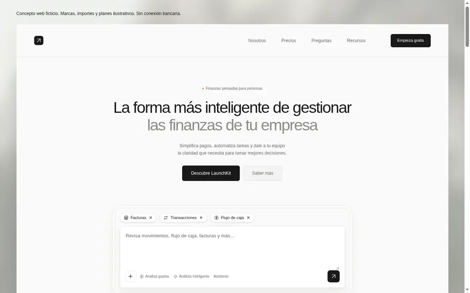

Webs populares / LaunchKit
Diseño de muestra de diseño.md · Diseños propios
LaunchKit

Diseño de muestra de diseño.md para finanzas empresariales: fondo claro, paneles sobrios y acento naranja. Demo independiente basada en una referencia visual, sin afiliación ni servicio financiero real.
Demo independiente de diseño.md, basada en una referencia visual. No es una web oficial ni un servicio comercial real.
Colores del diseño
primary
#181918on-primary
#FFFFFFsecondary
#F3F3F2accent
#FF7B35background
#FAFAFAsurface
#FFFFFFtext
#181918muted
#6C6D69border
#E7E7E4Instrucción para tu IA
Crea [describe aquí tu web]. Usa el DESIGN.md que te he pasado (diseño de muestra LaunchKit) como referencia visual: aplica sus colores, tipografías, radios y componentes, pero con mis textos, mi logotipo y mis imágenes.
Ver el archivo DESIGN.md completo (para técnicos)
221 líneas Descargar
---
version: "alpha"
name: LaunchKit — Finanzas claras
description: "Sistema visual gratuito en español para una landing financiera clara, basado en una referencia aportada por el usuario. Demo independiente, sin afiliación ni servicio financiero real."
colors:
primary: "#181918"
on-primary: "#FFFFFF"
secondary: "#F3F3F2"
accent: "#FF7B35"
background: "#FAFAFA"
surface: "#FFFFFF"
text: "#181918"
muted: "#6C6D69"
border: "#E7E7E4"
typography:
display-lg:
fontFamily: Arial
fontSize: 2.6875rem
fontWeight: 500
lineHeight: 1.12
letterSpacing: -0.045em
headline-md:
fontFamily: Arial
fontSize: 2.125rem
fontWeight: 500
lineHeight: 1.12
letterSpacing: -0.045em
body-md:
fontFamily: Arial
fontSize: 0.9375rem
fontWeight: 400
lineHeight: 1.5
letterSpacing: 0em
label-sm:
fontFamily: Arial
fontSize: 0.75rem
fontWeight: 400
lineHeight: 1.5
letterSpacing: 0em
rounded:
sm: 5px
md: 9px
lg: 20px
full: 9999px
spacing:
xs: 4px
sm: 8px
md: 16px
lg: 32px
xl: 64px
components:
button-primary:
backgroundColor: "{colors.primary}"
textColor: "{colors.on-primary}"
typography: "{typography.label-sm}"
rounded: "{rounded.sm}"
padding: 11px 23px
button-secondary:
backgroundColor: "{colors.secondary}"
textColor: "{colors.muted}"
typography: "{typography.label-sm}"
rounded: "{rounded.sm}"
padding: 11px 23px
button-featured:
backgroundColor: "{colors.accent}"
textColor: "{colors.text}"
typography: "{typography.label-sm}"
rounded: "{rounded.sm}"
padding: 11px 23px
card:
backgroundColor: "{colors.surface}"
textColor: "{colors.text}"
rounded: "{rounded.md}"
padding: 24px
link:
backgroundColor: "{colors.background}"
textColor: "{colors.text}"
tag:
backgroundColor: "{colors.surface}"
textColor: "{colors.text}"
rounded: "{rounded.full}"
padding: 4px 10px
caption:
backgroundColor: "{colors.background}"
textColor: "{colors.muted}"
typography: "{typography.label-sm}"
divider:
backgroundColor: "{colors.border}"
height: 1px
---
# LaunchKit — Finanzas claras
Sistema de diseño gratuito en español para construir una landing de software financiero. La composición reproduce la referencia visual IMG_0987 aportada por el usuario y su adaptación española anterior; no es un análisis de la web oficial ni una copia de su código. La tipografía exacta y los recursos originales de la referencia no están disponibles: se sustituyen por Arial, un paisaje ilustrativo y gráficos propios. No se afirma una similitud medida del 95 %.
## 1. Intención visual
Una hoja casi blanca sobre un paisaje desaturado y desenfocado. Tipografía pequeña y precisa, titulares centrados, líneas muy finas, módulos financieros sobrios y mucho aire. El negro guía la acción. El naranja aparece casi exclusivamente en el plan destacado y en pequeños indicadores de sección.
El contenido debe parecer un producto B2B ordenado, no una web de criptomonedas ni una consultoría: sin neón, cristal brillante, degradados en los títulos, sombras pesadas o tipografía de exhibición. No convertir la página en un panel a pantalla completa.
## 2. Composición y medidas
| Elemento | Escritorio | iPhone / móvil |
| --- | --- | --- |
| Hoja principal | Máximo 1176 px; margen lateral mínimo 36 px | Ancho disponible menos 24 px |
| Barra superior | 90 px de alto; relleno horizontal 48 px | 72 px; relleno 20 px; menú desplegable |
| Hero | Relleno 78 px arriba, 94 px abajo | 64 px arriba, 70 px abajo |
| Título principal | 43 px; ancho máximo 760 px | 32 px; líneas naturales |
| Titulares de sección | 34 px | 28 px |
| Asistente | Máximo 640 px; margen superior 74 px | Ancho completo; margen superior 54 px |
| Funciones | Dos columnas; separación 18 px | Una columna; separación 14 px |
| Tarjetas de función | 448 px de alto | 410 px de alto |
| Planes | Tres columnas dentro de un marco gris claro | Tres tarjetas apiladas |
| Preguntas | Retícula de tres columnas | Lista de una columna |
| Pie de página | Fondo casi negro; nombre gigante recortado por su base | Tres columnas de enlaces; nombre ajustado al ancho |
Puntos de ruptura: 900 px y 600 px. A partir de 1600 px el contenedor deja de crecer. Usar `minmax(0, 1fr)` en las retículas; los elementos flexibles deben admitir `min-width: 0`. No ocultar un desbordamiento para disimular un error de anchura.
## 3. Orden de las secciones
1. Aviso discreto fuera de la hoja: concepto ficticio, datos ilustrativos, sin conexión bancaria.
2. Navegación con símbolo cuadrado, enlaces pequeños y “Empieza gratis”.
3. Hero centrado: frase de contexto, titular negro/gris, descripción y dos acciones.
4. Asistente financiero de muestra: fuentes en píldoras, consulta y herramientas inferiores.
5. Franja gris de identidades ficticias, sin presentarlas como clientes reales.
6. Funciones: dos grandes módulos con transferencias y recibo móvil.
7. Infraestructura: titular, acciones, procesador isométrico de capas y etiquetas laterales.
8. Precios: conmutador mensual/anual y tres planes; naranja solo en el botón de Crecimiento.
9. Preguntas: nueve bloques abiertos inicialmente; el primero oscuro.
10. Captación: titular centrado, texto corto, correo y botón.
11. Pie negro: recursos y nombre LAUNCHKIT de gran tamaño.
## 4. Colores y tipografía
Los valores del bloque YAML son la fuente de verdad. Tokens adicionales de esta demo: gris de título secundario `#8B8C88` solo en texto grande, gris de marcos `#C4C5C0`, foco `#9C3B0A`, verde informativo `#577B68`, pie `#080908`, marca gigante `#242624` y fondo exterior `#C3CDD0`.
Familia: `Arial, Helvetica, sans-serif`, sin peticiones de fuentes externas. Los títulos usan peso 500, interlineado 1,12 y espaciado negativo. Los textos de apoyo de la réplica de escritorio tienen 12 px; etiquetas 10–12 px. En móvil, todo campo de escritura tiene al menos 16 px para evitar el zoom automático de Safari. Para una web comercial con mayor densidad de lectura, subir los textos de apoyo a 14–16 px manteniendo la estructura.
Los números usan `font-variant-numeric: tabular-nums` y formato `Intl.NumberFormat('es-ES')`. El acento naranja lleva texto oscuro para mantener el contraste. No usar el gris más claro para información imprescindible.
## 5. Componentes
### Botones
Rectángulos discretos, radio de 5 px. Primario negro con texto blanco; secundario gris claro con borde; destacado naranja con texto oscuro. Altura habitual de 42 px. Evitar flechas pegadas al texto. Solo el acceso a preguntas utiliza forma de píldora. Hover: desplazamiento vertical de −1 px; pulsación: +1 px. Transición de 160 ms, nunca `transition: all`.
### Asistente
Marco exterior redondeado de 20 px, borde fino y halo naranja muy tenue. Las fuentes se muestran encima del área de consulta en píldoras blancas. El panel interior es blanco, con sombra ligera y radio de 9 px. La franja inferior contiene restaurar fuentes, sugerencias y enviar. La respuesta aparece debajo, nunca encima de la consulta. Los textos introducidos no se insertan como HTML.
### Transferencias
Tarjeta blanca pequeña, sombra suave, buscador gris, lista de tres países y valores alineados a la derecha. Cada fila tiene bandera circular, país, aclaración de la moneda de origen y tipo de cambio. Los tipos son constantes ficticias; no simular una cotización en tiempo real.
### Recibo móvil
Silueta blanca de un móvil con borde gris, sin fotografía de un dispositivo comercial. Botón de micrófono y recibo simplificado. El botón muestra una simulación: no pedir permisos de micrófono ni insinuar una transcripción real.
### Diagrama de infraestructura
Cuatro capas isométricas blancas con contornos grises; sin animación continua ni perspectiva 3D pesada. SVG accesible con título descriptivo. Mantener las etiquetas en HTML cuando deban leerse o traducirse.
### Planes
Marco exterior gris y tres columnas con bordes compartidos. El precio manda, no una insignia de “más popular”. Los importes 0 €, 49 € y 75 € son demostrativos. El pago anual aplica un 20 % a los planes de pago y muestra el total anual; no se ejecuta ningún cobro.
### Preguntas
Usar `details` y `summary` nativos, abiertos inicialmente. El primer bloque abierto es negro, los otros son blancos. En móvil se convierten en filas legibles. El símbolo cambia de menos a más al cerrar; el teclado funciona sin controladores especiales.
## 6. Interacciones incluidas
| Control | Comportamiento real en la demo |
| --- | --- |
| Menú móvil | Abre/cierra enlaces, actualiza `aria-expanded`; Escape lo cierra |
| Fuentes del asistente | Cada × retira una píldora; + restaura las tres |
| Sugerencias | Rellenan la consulta y mueven el foco al campo |
| Enviar consulta | Muestra un resumen fijo con importes ficticios, no una IA |
| Buscar país | Filtra sin distinguir tildes; muestra estado vacío |
| Moneda | Cambia las conversiones ilustrativas entre USD, EUR y GBP |
| Micrófono | Muestra un recibo de ejemplo y explica la simulación |
| Periodo | Actualiza precios, total anual y estado accesible |
| Ver plan | Abre un diálogo; no crea una cuenta ni suscripción |
| Correo | Valida formato y confirma que no se envía ni guarda |
| DESIGN.md | Descarga local con Blob; copia al portapapeles cuando se permite |
| Privacidad y créditos | Abren información clara en un diálogo nativo |
Todo se restablece al recargar. Sin `fetch`, analítica, cookies, almacenamiento persistente, formularios externos, cobros, bibliotecas CDN ni fuentes remotas. La fotografía está integrada como `data:`. Los enlaces externos solo se visitan si el usuario los pulsa.
## 7. Accesibilidad y movimiento
- Documento en español, un solo `h1`, regiones semánticas y títulos jerárquicos.
- Enlace de salto, controles nativos, etiquetas de campo y nombres para botones de icono.
- Foco visible de 2 px; nunca eliminarlo sin sustitución.
- Mensajes de resultado con `role="status"`; el diálogo devuelve el foco al control de origen.
- Fuentes eliminadas con foco restituido en el botón de restauración.
- Respetar `prefers-reduced-motion`: sin transiciones y sin desplazamiento suave.
- No bloquear el zoom ni imponer `maximum-scale`.
- Considerar las zonas seguras del iPhone en los márgenes superior e inferior.
- Evitar movimiento automático, carruseles, scroll secuestrado y efectos de paralaje.
## 8. Contenido, SEO y uso responsable
Todo el contenido visible está en español. LaunchKit se conserva como nombre propio; el resto de marcas de la franja es ficticio. Nunca publicar métricas, clientes, garantías de seguridad o testimonios inventados. La fotografía de archivo debe seguir identificada como ilustrativa.
Esta demo incluye título, descripción, Open Graph 1200 × 630, tarjeta social, preguntas visibles y JSON-LD `WebPage` con idioma y descripción verificables. Está marcada `noindex,follow` para no competir con el catálogo ni presentarse como entidad financiera. No añadir datos estructurados de productos financieros, reseñas ni ofertas reales.
Antes de integrarla, el responsable de ia.cuadrantia.store debe adaptar la URL absoluta de `og:image` si cambia `/demos/launchkit/`. El archivo `og.png` se incluye. No hay una URL canónica fijada: solo debe añadirse cuando exista una ruta pública definitiva. El catálogo y sus metadatos los gestiona su mantenedor.
## 9. Recursos y alcance
- Referencias: IMG_0987 y adaptación española previa aportadas por el usuario; no se redistribuyen las capturas dentro del ZIP.
- Paisaje ilustrativo: `https://images.unsplash.com/photo-1472396961693-142e6e269027`, integrado, desaturado y desenfocado. Revisar la licencia de Unsplash antes de sustituirlo o redistribuirlo en otro contexto.
- Iconos SVG y procesador: dibujados para esta implementación.
- Código: HTML, CSS y JavaScript nativos; sin instalación ni servicios de pago.
- Este archivo y la demo se entregan gratuitamente para reutilizar el sistema visual; no conceden derechos sobre marcas ni recursos de terceros.
## 10. Instrucción para tu IA
> Construye una landing en español siguiendo este DESIGN.md. Conserva el contenedor blanco de 1176 px, la jerarquía tipográfica contenida, los márgenes generosos, los módulos financieros con bordes finos y el naranja reservado al plan destacado. En móvil, apila funciones y planes, usa campos de 16 px y evita el desbordamiento horizontal. No inventes testimonios, logotipos de clientes, métricas o servicios activos. Si no hay backend, identifica expresamente cada simulación y no envíes datos personales. Entrega un HTML autónomo y un ZIP con index.html en la raíz.